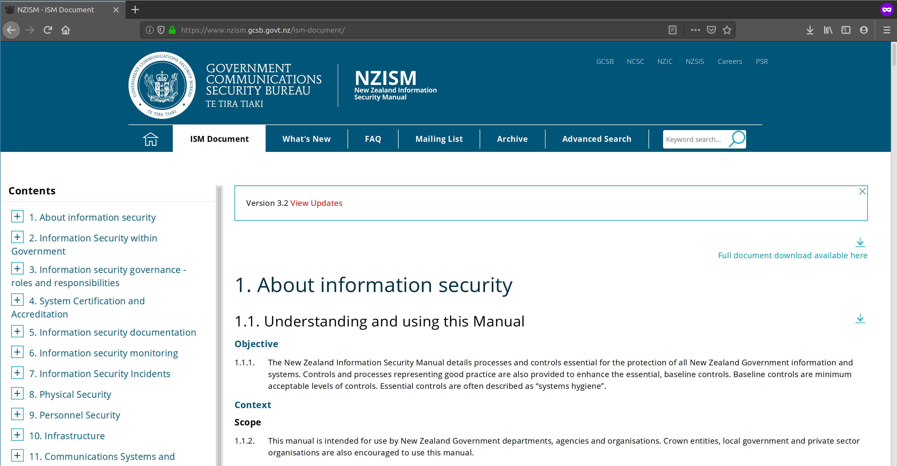

The Problem
Background and context which drove this project.
We underook this project for a security company called SSS - IT Security Specalists, who were looking for students to help solve a business problem. Our team decided to take on this project after deciding that this would be a an excellent challenge and learning experience.
The New Zealand Information Security Manual (NZISM) is a manual created by the GCSB. The NZISM helps to govern the NZ government agencies' information systems. This manual contains over one thousand 'security controls' that are put in place for these systems to ensure they are properly secured for the information they contain.
The business problem is that the NZISM webpage did not have a reliable export feature that could format all of the controls correctly into a comma-separated values (CSV) file. This was needed to help automate mundane tasks for the company that requires these controls for their clients.
